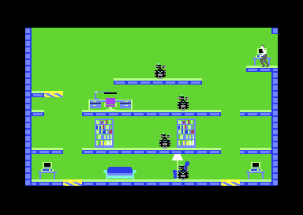

<meta charset="utf-8">
<meta name="viewport" content="width=device-width, initial-scale=1">
<title>Impossible Mission</title>
<link rel="preconnect" href="https://fonts.googleapis.com">
<link rel="stylesheet" href="https://fonts.googleapis.com/css2?family=Lato:wght@400;700;900&family=IBM+Plex+Mono:wght@400;500&display=swap">
<link rel="stylesheet" href="reference/impossible-mission-page.css">
<!-- tabs -->
<header class="hero">
  <p class="eyebrow">Commodore 64 · 1984 · Epyx</p>
  <h1>Impossible Mission</h1>
  <p class="sub">Dennis Caswell's stronghold is rebuilt for every game: the map, the robots' behaviour, the password and the puzzle pieces are rolled when a game starts. Two copy-protection checks keep running while you play, and the timing was written for American televisions.</p>
</header>
<main class="wrap">
<section id="game">
  <p class="fig">01 · The game</p>
  <h2 class="t">Find nine letters of a password before six o'clock</h2>
  <p>You play a secret agent inside the stronghold of Professor Elvin Atombender. It is 32 rooms joined by lift shafts and corridors. Robots patrol the rooms, and six of them also hold a floating black ball. Touch either and you die. A death costs ten minutes, and the clock runs from twelve o'clock to six.</p>
  <p>The rooms are full of furniture. Stand in front of a piece and push up to search it. Hidden among 128 pieces of furniture are 36 puzzle pieces and 18 passwords. A snooze password stops a room's robots for a while, and a lift-init password puts its lifting platforms back where they started. Both are used at the security terminals.</p>
  <p>Every four puzzle pieces make one picture. You put them together on a pocket computer, which you can open only in a lift or a corridor. Each finished picture gives one letter of a nine-letter password, and the whole password opens Elvin's control room.</p>
  <div class="shots">
    <figure><figcaption>The start: the agent waits in a lift until fire is pressed. The panel below is the pocket computer. Captured in an emulator.</figcaption></figure>
    <figure><figcaption>A room: floors, furniture to search, striped lifting platforms and robots.</figcaption></figure>
    <figure><figcaption>The pocket computer, where pieces are flipped, recoloured and put together.</figcaption></figure>
  </div>
  <p class="overview-links"><a href="levels.html">The stronghold</a><a href="mechanics.html">How it works</a><a href="music.html">Sound and speech</a><a href="discoveries.html">Discoveries</a></p>
</section>

<section id="release">
  <p class="fig">02 · The release</p>
  <h2 class="t">Ten months of work, an idea from <i>WarGames</i>, and a title chosen to sound like <i>Mission: Impossible</i></h2>
  <p>Epyx published <i>Impossible Mission</i> for the Commodore 64 in 1984. The company had started in 1978 as Automated Simulations, founded by Jim Connelley and Jon Freeman to sell tactical combat games, and took the name of its action label, Epyx, in 1983. In 1984 it also published <i>Summer Games</i>, timed for the Los Angeles Olympics, and <i>Pitstop II</i>.</p>
  <p>Dennis Caswell came to Epyx when it bought Starpath, the maker of the Supercharger add-on for the Atari 2600, for which he had written <i>Phaser Patrol</i> and <i>Escape from the MindMaster</i>. By his account the game took about ten months. The idea came from the film <i>WarGames</i>: an agent breaking into a complex run by a computer. The running man was the first thing he made, drawn on graph paper and typed into the program as hex by hand. The game went untitled for a long time, and the name it got was picked to call the television series <i>Mission: Impossible</i> to mind without using its title. The code still shows where it was made: it is timed for American NTSC televisions (<a href="mechanics.html#clock">How it works</a>).</p>
  <p>The voice came from Electronic Speech Systems. Caswell asked for a fiftyish Englishman, like a James Bond villain, and the company had one on its staff; Caswell never met him. The story goes that ESS raised its prices once the game had shown what its speech could do, and that Epyx did not use it again. British listings give £8.95 on cassette and £11.95 on disk (one gives £7.95); no American price turned up.</p>
</section>

<section id="reception">
  <p class="fig">03 · Reception</p>
  <h2 class="t">Reviewed in Zzap!64's first issue, and followed by a new C64 sequel in 2026</h2>
  <p>British magazines took it up in 1985. Zzap!64 reviewed it in its first issue, dated May 1985, and its reviewers played it against each other in the issue's Zzap Challenge, which Julian Rignall won over Gary Penn and Bob Wade. The score that issue gave it is quoted differently by different sources, so it is left out here until the review itself can be read.</p>
  <p>American magazines kept coming back to it. In 1986 Compute!'s Gazette called Caswell "one of those rare people who has all the skills necessary to create and design an outstanding game", at a time when games were more and more made by teams. In May 1988 COMPUTE! listed it among "Our Favorite Games", and named the sound of the agent jumping to his death as one of its guilty pleasures.</p>
  <p>Ports followed from 1985 to 1990, for the Apple II, ZX Spectrum, Amstrad CPC, BBC Micro, Acorn Electron, Atari 7800 and Master System, and the C64 original came back in 1988 as a budget re-release on Mastertronic's Ricochet label. A sequel, <i>Impossible Mission II</i>, came in 1988, and <i>Impossible Mission 3</i>, a new Commodore 64 game, was released on 18 May 2026.</p>
  <p class="overview-note">The pages these details come from could not be opened from where this site was written. They are taken from a web search's summaries of Wikipedia, C64-Wiki, MobyGames, Lemon64 and magazine archives, made on 4 October 2026, and kept to what the summaries agreed on. The <a href="about.html">About</a> tab lists them.</p>
</section>

<section id="findings">
  <p class="fig">04 · What the code keeps</p>
  <h2 class="t">Copy checks that never stop, a phone that dials real tones, and a clock that runs slow in Europe</h2>
  <table class="d">
    <tr><th>Found in the code</th><th>Where</th></tr>
    <tr><td>Two protection checks run all through play: one executes a chip register as an instruction, the other halts the processor if a colour the loader set has changed.</td><td><a href="discoveries.html#protection">Discoveries</a></td></tr>
    <tr><td>The phone on the pocket computer dials one of two numbers in genuine touch tones.</td><td><a href="music.html#phone">Sound and speech</a></td></tr>
    <tr><td>The game counts 60 frames to the second. On a European PAL machine the six hours take 7 hours 12 minutes; only the lip-sync of the ending is corrected.</td><td><a href="mechanics.html#clock">How it works</a>, <a href="ending.html#elvin">The ending</a></td></tr>
    <tr><td>The four pieces of a puzzle divide its picture exactly. Descriptions of the game say they overlap.</td><td><a href="mechanics.html#pieces">How it works</a></td></tr>
    <tr><td>The speech data holds eight voice lines, and the game never plays one of them.</td><td><a href="music.html#speech">Sound and speech</a></td></tr>
  </table>
</section>

<section id="copy">
  <p class="fig">05 · The copy studied here</p>
  <h2 class="t">The Epyx disk for European machines, with its protection intact</h2>
  <p>These pages describe one copy: the Epyx disk for PAL machines, imaged at the level of the disk's magnetic encoding, so that its protection still works. The loader asks the drive about the disk, and the program it loads is broken in three bytes until a good answer mends them (<a href="discoveries.html#protection">Discoveries</a>). No version number or build string was found in the program.</p>
  <p>Descriptions of the game used here come from the summaries of web searches made on 1 and 4 October 2026, because the pages themselves could not be opened. Each one was checked against the code, and the <a href="about.html">About</a> tab lists them with what the code says.</p>
  <p class="overview-note">The <a href="source.html">Source code</a> tab links every explanation to its address. No game image is hosted here.</p>
</section>
</main>
<footer style="margin:16px 0 0;padding:22px var(--gx) 0;border-top:1px solid #e0ded8;font-family:'IBM Plex Mono',ui-monospace,Menlo,monospace;font-size:12px;color:#80838a"><a href="/kit.html" style="color:#1f5fa8;text-decoration:none">Kit changelog</a> · <a href="https://github.com/gamesexplained/gamesexplained" style="color:#1f5fa8;text-decoration:none">GitHub</a> · <a href="https://discord.gg/3V9GWyRDWV" style="color:#1f5fa8;text-decoration:none">Discord</a><br>© Games Explained contributors. Write-ups, facts and symbol maps are available under <a href="https://creativecommons.org/licenses/by-sa/4.0/" style="color:#1f5fa8;text-decoration:none">CC BY-SA 4.0</a>; code under <a href="https://opensource.org/licenses/MIT" style="color:#1f5fa8;text-decoration:none">MIT</a></footer>
